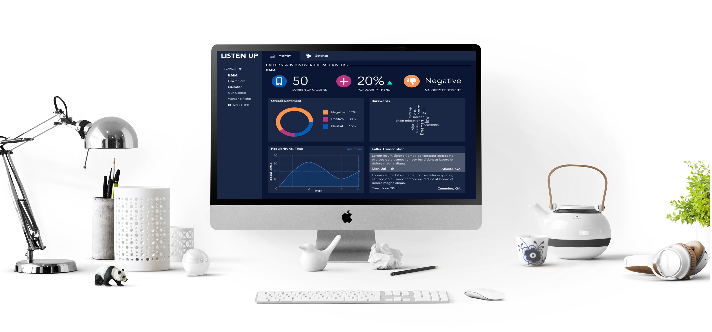
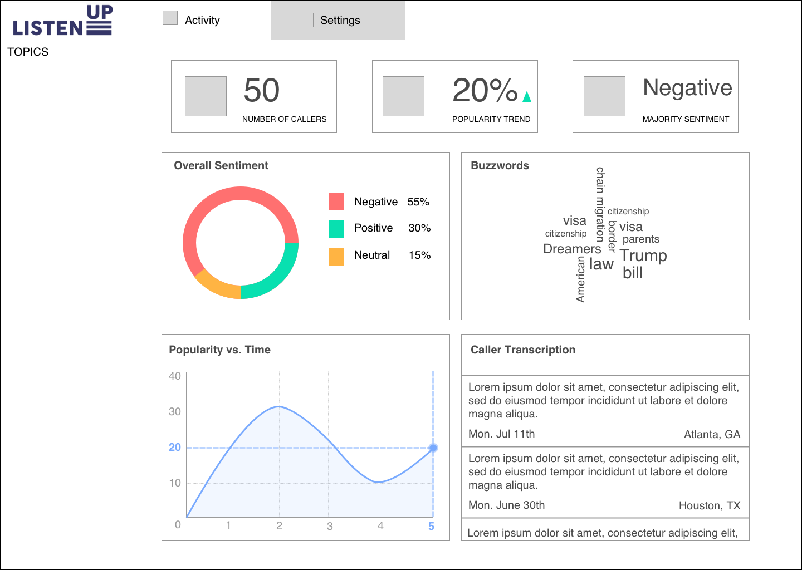
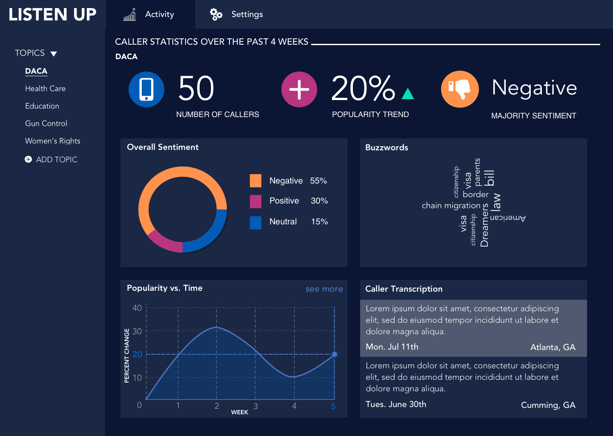

This application was created at a hackathon, a period of 36 straight hours, with a team of 5 people. Through this platform, constituents get a voice by automation.

In today's politically polarizing times, people want their voices heard more than ever. A seemingly effective way to voice opinions is to call your state or national representative's office. One of our team members, however, has almost never been able to leave a message due to the voicemail inbox being full. After additional consultation with elected official offices, most of the staff tasked with listening to the voicemails rarely take into account the opinions and sentiment being shared. Why should thousands of voices and priceless data be lost in the void?
ListenUp is a web application that hopes to address this problem. The web application, which is linked to an elected official's voicemail inbox and email, automatically transcribes the messages sent to the official, intelligently analyzes the message for key issues and sentiment, and aggregates the data into an accessible database for data visualization. The goal of this project is to ease the burden of getting to know constituents for elected officials, as well as giving constituents more of a voice in policy.
In the wireframe below, I wanted to make the product look like a dashboard. I started with this constraint and considered what were the three most desired concepts necessary for a user. This included number of calls, a calls popularity and whether the overall sentiment was negative. Below I also included graphs that detailed more of that information and expanded upon the transcribed messages. We only had 36 hours to make the design and create the app. What do you think?

This is the final design that I was able to comp after the hackathon. I included dark colors and finished off the look. Some things I will think about for the next iteration is whether the colors truly communicate the messages, such as negative, positive or neutral. You can check out the full devpost here
